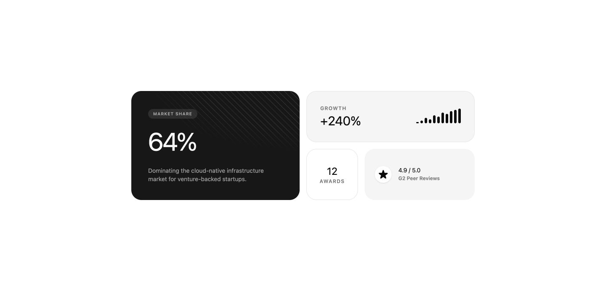
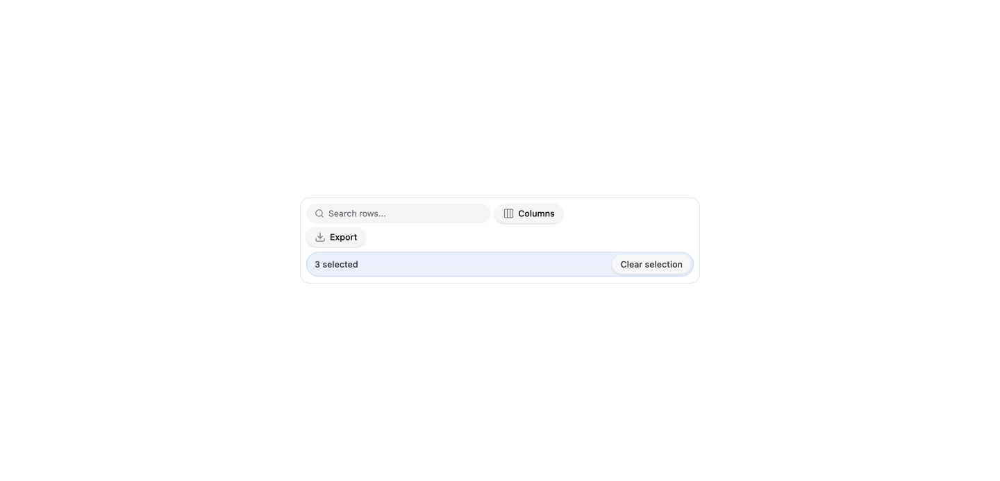
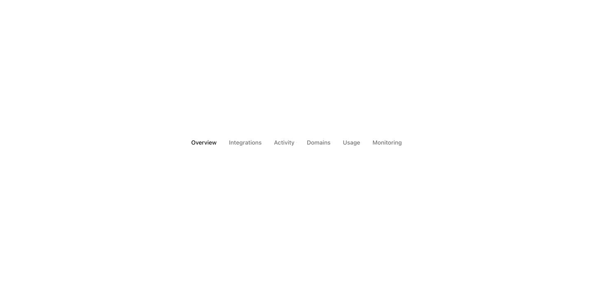
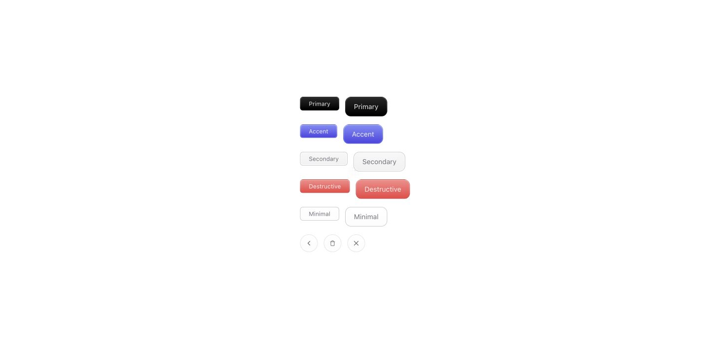
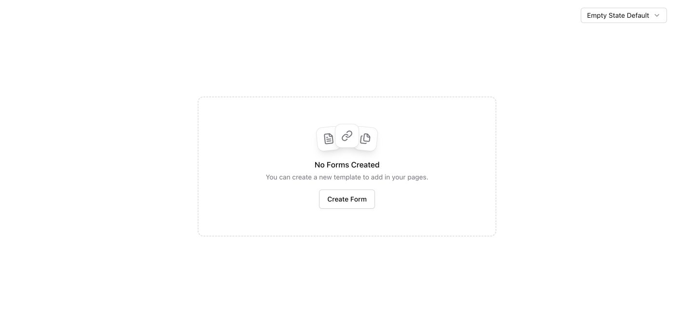
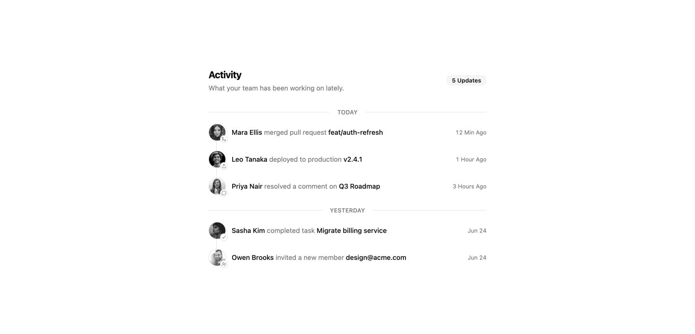
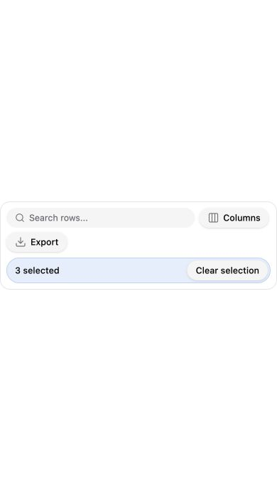
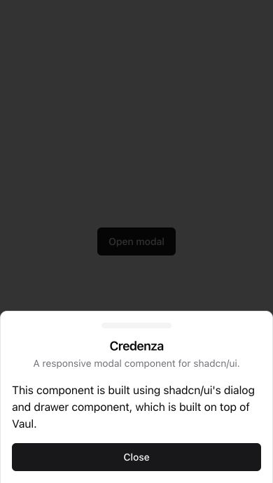

Leads & tablesStart here
Data Table Toolbar
@uai · MIT
Search, columns and export in one compact strip. Selection actions appear when needed.
Fit for our CRM
Connect existing filters and real exports; stack the controls on phones.
A considered shopping list from 21st.dev for our CRM: clearer daily workflows, thoughtful detail and a little visual delight.
Compact and polished, with a blue accent, subtle depth and a clear hierarchy. These are actual catalog demos with sample content; the CRM has not been changed by this research.

One clear summary, smaller supporting metrics. Reduce the whitespace for daily CRM use.

Search, columns, export and contextual bulk actions in one place.

Quiet, compact navigation between enquiry, trip, quotations and activity.

Use restrained texture for primary actions; preserve focus and loading states.

A plain explanation plus one useful action.

Group actual CRM activity by day, actor and time.
Each listing displayed MIT or MIT-0. Free source viewing is quota-limited. These are candidates to adapt into our shared components; full source, accessibility and React 19 compatibility still need implementation review.
@uai · MIT
Search, columns and export in one compact strip. Selection actions appear when needed.
Connect existing filters and real exports; stack the controls on phones.
Yadwinder Singh · MIT
Low-height Overview, Trip, Quotes, Payments and Activity navigation inside lead details.
Retain URLs and form state; verify keyboard behavior and overflow.
redpangilinan · MIT
A desktop dialog becomes a phone drawer for new leads and follow-ups.
390px demo fitted the screen. Integrate focus handling and test long forms with keyboards.
Origin UI · MIT
Clearer trip dates and booking/report filters.
Day Picker and date-fns already exist; preserve date-only values and trip calculations.
Serafim · MIT
Friendly no-results, no-quotes and no-documents states with a useful action.
Use different copy and actions for loading, no results and request failures.
Yadwinder Singh · MIT
A clear Save / Discard prompt while editing profiles or trip details.
Bind it to real dirty and pending state; avoid covering phone navigation.
UI Layouts · MIT
Give the dashboard one clear primary metric with smaller supporting insights.
Adapt the composition to compact CRM cards and actual metrics.
ReUI · MIT
A consistent hierarchy for collections, outstanding balances and enquiries.
Use TTE primitives, softer colors and INR; only show real comparisons.
ReUI · MIT
More consistent enquiry and collection trend charts.
Recharts already exists; adapt theme wrappers and make tooltips usable on touch.
7Ovr · MIT-0
Calls, notes, quotations and payment events grouped into a readable history.
Use real events with actor and timestamp; no invented audit data.
cult/ui · MIT
A little tactile depth for New Lead, Save and Generate Quote.
Keep current Button API, loading/focus states and 44px touch targets.
Motion Primitives · MIT
Brief metric transitions after a filter or data change.
Assess motion-package adaptation; disable motion when requested and keep values legible.
rds_agi · MIT
Search large customer, agent, hotel or supplier lists.
Replace Next-specific demo images; handle cancellation, loading and no results.
HextaUI · MIT
Clear attachment, receipt and voucher upload states.
Connect real progress and validation; retain a normal file button on phones.
Kibo UI · MIT
A possible shared foundation for larger customer and payment tables.
Adds TanStack Table and replaces Next demo code; preserve dedicated phone cards.
Uai · MIT
Group existing global search into leads, customers and actions.
Listing describes keyboard/reduced-motion support. Live iframe was blank; interaction needs verification.
No matching candidates. Try another search or area.
Chrome demo checks at 390 × 690. The toolbar had no page-level horizontal overflow; the open drawer settled within the viewport. Long forms, virtual keyboards and physical phones still need CRM testing.

Search, export and selection controls stay within the screen width.

Keep the context behind the action and make the form easy to reach.
Keep the reclaimed desktop space, the current roles and calculations, and the existing mobile navigation. Preserve upstream licenses when source is imported.